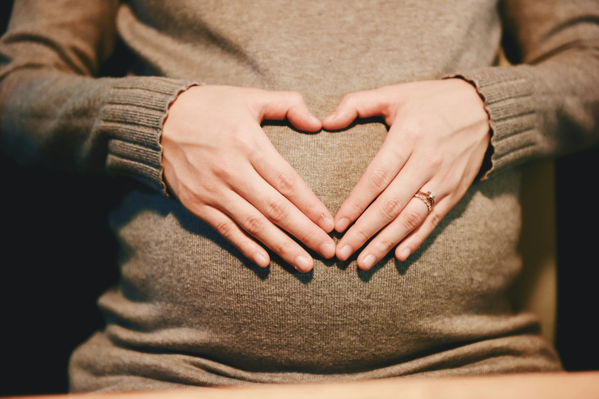

Om oss

Regnbågsbarn grundades 2025 av mig Susanna Carlsson. Min och min mans väg till ett barn har varit lång och
krokig. Efter 1 1/2 år kom äntligen vår lille Nico till världen. Detta skedde efter att vi efter 12 månader
sökte vård och fick utskrivet tabletter för att stimulera ägglossning. Efter detta blev jag gravid med Nico
efter bara 3 månader.
När det sedan blev dags för ett syskon trodde vi båda att det skulle gå snabbt och enkelt med ett syskon nu när vi hade tabletterna, ack så fel vi hade
På 12 månader lyckades vi bli gravida fyra gånger, samtliga slutade i missfall. Vården gjorde efter tre missfall en utredning men hittade ingenting
Om det är något jag lärt mig på vår resa så är det att det finns en stor lucka kring människor som går igenom missfall. Både gällande känslomässigt stöd men även hjälp från vården
Media kryllar av historier där samtliga slutar lyckligt. Denna sida startade jag därför att jag ville skapa en mötesplats till alla oss som har kämpat eller som fortfarande kämpar.